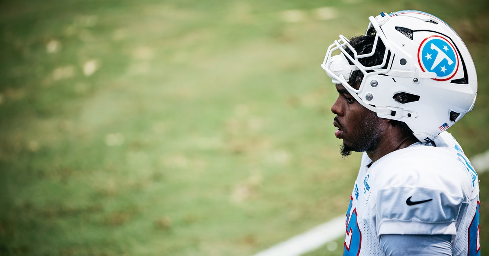

Titans' Jaylen Harrell hospitalized after serious Tampa crash — police say he allegedly assaulted his rideshare driver
Titans defensive end Jaylen Harrell remains hospitalized after a serious car accident in his hometown of Tampa on Friday. Tampa police say Harrell allegedly assaulted his rideshare driver while the car was moving, causing the crash.

Disclosure: this post contains affiliate links. I earn a commission on qualifying purchases.
Hospitalized after a serious crash
Tennessee Titans defensive end Jaylen Harrell remains hospitalized after being involved in a serious car accident in his hometown of Tampa, Florida, on Friday.
The Titans announced the news in a statement on Saturday, November 21. Harrell, 24, was taken to the hospital after the crash, and as of the team's statement he was still receiving care there.
"Yesterday, Jaylen Harrell was involved in a serious car accident that resulted in him being taken to the hospital in his hometown of Tampa, Florida," the Titans said. "We have been in constant communication with Jaylen's family and are still working to gather more information. At this time, Jaylen remains in the hospital and continues to receive care. We ask that Jaylen and his family's privacy be respected at this time. We will provide an update when appropriate."
The team did not disclose Harrell's condition or the injuries he suffered.
What police say happened
Tampa police say the crash happened at about 7:46 a.m. CT on Friday, November 20, and that Harrell was a passenger in a rideshare vehicle in Tampa.
According to a statement from the Tampa Police Department obtained by The Tennessean on Saturday, police say Harrell allegedly assaulted the driver of his rideshare while the vehicle was in motion. Police said the assault caused the driver to swerve into another vehicle before crashing into a utility pole. The impact forced Harrell forward and his head struck the windshield, leaving him unconscious. He was taken to a nearby hospital, where he remains.
The rideshare driver was treated for minor injuries at the scene but was not hospitalized, and the driver of the vehicle that was struck was not injured, according to police.
Tampa police are still investigating. No charges have been reported.
A season already lost
Harrell has not played this season. He tore his ACL on August 13 during the Titans' preseason opener against the San Francisco 49ers and was placed on season-ending injured reserve.
A seventh-round pick in the 2024 NFL Draft out of Michigan, Harrell was in Tampa rehabbing the knee injury when the crash happened.
What comes next
There is not much more to say right now, and the Titans made that clear in their own statement — they are still gathering information, and they asked for privacy for Harrell and his family.
The football part of this is the smallest part. A 24-year-old is in the hospital with serious injuries, and the police account of how the crash happened raises questions that will take time to answer. The Titans said they will provide an update when appropriate.
Sources
• Titans LB Jaylen Harrell hospitalized following 'serious' car accident (Reuters)
• Police say Titans' Jaylen Harrell allegedly assaulted driver, causing accident (The Tennessean)
• Titans' Harrell hospitalized in Florida after car crash (theScore, via AP)
• Titans DT Jaylen Harrell hospitalized after 'serious car accident' in Tampa (USA Today)
Gear up: Fanatics